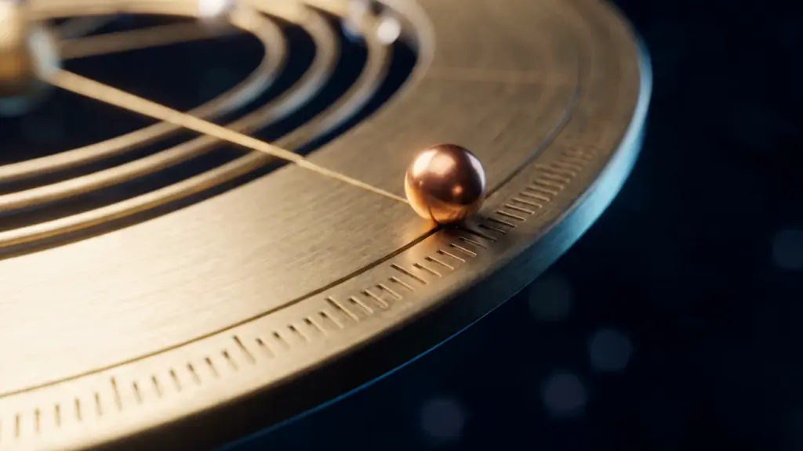

Astroloji ve numeroloji
Doğduğun anıngökyüzü,senin haritan.
Astro Yuvam, doğduğun andaki gerçek gezegen konumlarını hesaplar. Haritanı ücretsiz çıkar, istersen sana özel yazılmış raporunu PDF olarak al.
24 kişiye özel rapor · 34 ücretsiz araç · üyelik gerekmez
Doğduğun an gökyüzü bir kez öyle dizildi.
Her gezegen bir burçta, bir evde, kendi yerindeydi.
O anı hesaplıyor, sana anlaşılır bir dille anlatıyoruz.
Şu an gökyüzünde
Bugün gökyüzü böyle.
Raporlarımız da ücretsiz araçlarımız da aynı yerden başlar: gezegenlerin gerçek konumları. Bu çark her gün yeniden hesaplanır.
01Raporlar
Sana özel yazılan 24 rapor.
Her rapor doğduğun andaki gerçek gezegen konumlarından hesaplanır, sana özel yazılır ve PDF olarak e-postana gelir. 18 raporun üç sayfalık örneğini satın almadan görebilirsin.
Raporlar yükleniyor. Tüm liste aşağıda da var.
Nasıl çalışır?
Dört basit adımda kişisel raporun e-postanda.
Raporunu seç
İhtiyacına uygun rapor türünü seç.
Bilgilerini gir
Doğum tarihi, yeri ve birkaç detay yeterli.
Güvenle öde
Güvenli ödeme altyapısıyla ödemeni tamamla.
E-postana gelsin
Raporun hazır olduğunda PDF olarak e-postanda.
Tüm Raporlar ve Fiyatları
24 kişiye özel PDF rapor · tek seferlik ödeme · 18 raporun 3 sayfalık örneği ücretsiz
- Pusula Serisi (İş, Aşk, Para, Yetenek, Yaşam) ve Altın Pusulakişiye özel plan · 1.500 TL'den
- Doğum Haritası Analizi (Haritanı Tanı)20+ sayfa · 750 TL
- Çocuğunu Tanı — Gelişim ve Eğitim14+ sayfa · 750 TL
- Kariyer ve Meslek Haritası14+ sayfa · 675 TL
- Aşk Haritası11+ sayfa · 675 TL
- Karmik Harita13+ sayfa · 600 TL
- Vedik Doğum Haritası (Jyotiṣa)12+ sayfa · 675 TL
- Astrokartografi — Dünyada Senin Yerin13+ sayfa · 900 TL
- Transit Raporu (12 Aylık Öngörü)11+ sayfa · 450 TL
- Solar Return (Kişisel Yıl Haritası)14+ sayfa · 400 TL
- Lunar Return (Aylık Duygusal Harita)12+ sayfa · 300 TL
- Progresyon — Ruhsal Olgunlaşma Haritası12+ sayfa · 600 TL
- Seçim Astrolojisi — En Uygun Gün ve Saat9+ sayfa · 900 TL
- Sinastri (İlişki Uyumu)18+ sayfa · 750 TL
- İlişki Haritası — Kompozit ve Davison14+ sayfa · 750 TL
- Kader Matrisi24+ sayfa · 600 TL
- Kader Matrisi Uyum30+ sayfa · 750 TL
- Kişisel Numeroloji13+ sayfa · 525 TL
- Soru Astrolojisi (Horary)3–4 sayfa · 675 TL
Fiyatların ayrıntısı ve karşılaştırma → · 34 ücretsiz araç → · Astro Yuvam nedir? →
02Ücretsiz araçlar
Önce kendin dene, ücretsiz.
34 araç, üyelik gerekmez. Rapor almadan önce gökyüzünü, sayıları ve sembolleri kendin keşfet.
Doğum tarihini seç, ikisini hemen öğren.
Güneş burcun ve yaşam yolu sayın. İkisi de yalnızca doğum tarihinden hesaplanır.
- Ücretsiz Doğum Haritası HesaplamaEtkileşimli çark, ev sistemleri ve tüm açılar
- Yükselen Burç HesaplamaYükselenin doğum saatine göre nasıl değiştiğini canlı gör
- Burç Uyum Testiİki doğum tarihiyle iletişim, tutku ve güven uyumu
- Gökyüzü Zaman Makinesiİlk buluşma, düğün, doğum günü: o günün gökyüzü
- Doğduğum Gün Yaz Saati Var mıydı?Yanlış saat dilimi yükselen burcunu değiştirebilir
- Lilith Burcu HesaplamaKara Ay Lilith hangi burçta, hangi evde?
- Düğün Tarihi HesaplamaNikâh, nişan ve düğün için seçtiğin günü kontrol et
- Ay TakvimiBugünün ay evresi ve evreye özel niyet
- AsternaAstroloji ve numeroloji sorularını sor
03Burçlar
On iki burç, seninki hangisi?
Burcuna dokun; karakterini, aşk ve kariyer eğilimlerini, elementini ve uyumunu oku.
12 burç 100 üzerinden puanlandı: bu hafta zirvede kim?
İkizler'de dolunay, Mars Başak'ta. Her burcun haftası kendi bölümünde, ilk üç en sonda açılıyor.
04Yıldız Günlüğü
Merak ettiklerin, sade bir dille.
48 yazı: doğum haritasından numerolojiye, aşktan hesaplamalara.
Gökyüzün, her gün seninle.
Bir kez doğum bilgini gir; Astro Yuvam her sabah o günü senin haritana göre okusun. Üyelere özel:
Ücretsiz üye ol- Kozmik PanelimAy bugün hangi evinde, bu hafta hangi gün ne için uygun, kişisel gün sayın ve haritana dokunan açılar.
- Sana özel günlük yorumDoğum haritan ve bugünün gökyüzüyle yazılır.
- 30 günlük kişisel takvimSana özel tarihler, tek tıkla telefon takvimine.
- Doğum haritan her zaman hazırSevdiklerinin haritaları da kayıtlı.
- Asterna ile raporunu konuşBizden aldığın raporu satır satır incele.
Sorular
Sıkça Sorulan Sorular
Aklına takılanların cevabı burada.
Astro Yuvam nedir?
Rapor fiyatları ne kadar?
Satın almadan önce örnek rapor görebilir miyim?
Doğum saatimi bilmiyorum, yine de rapor alabilir miyim?
Raporum ne kadar sürede gelir?
İade veya iptal mümkün mü?
Bilgilerim güvende mi?
İlişki raporlarında neden partnerimin bilgileri isteniyor?
Raporlar ne kadar kişiye özel?
Raporu kimler için alabilirim? Kendim dışında biri olur mu?
Ödemeyi nasıl yapıyorum?

Önce haritana bak.
Doğum tarihin, saatin ve doğduğun yer yeterli. Haritanı ücretsiz çıkar; daha derine inmek istediğinde sana özel yazılan raporlar burada.